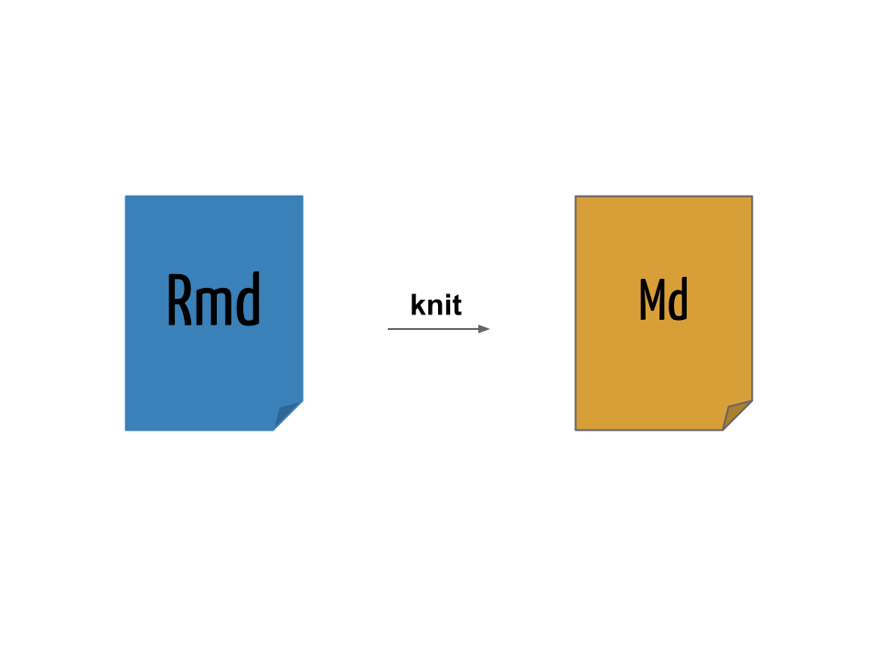
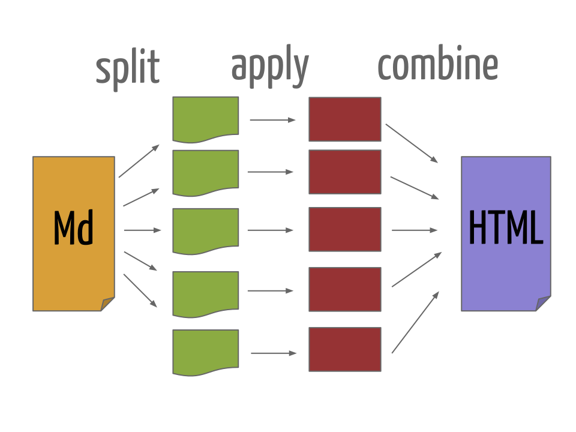

A Documentos dinâmicos
A ideia geral de um documento dinâmico é a de que ele pode ser gerado a partir de um código-fonte:
- Da mesma forma que um software possui seu código-fonte, um documento dinâmico é o código-fonte de um relatório.
- É uma combinação de código de computador e as correspondentes narrativas descrevendo o resultado que o código está gerando (números, tabelas, figuras, …).
- Quando compilamos o documento dinâmico, o código de computador é executado, e as saídas são apresentadas. Portanto obtemos um documento final que mistura código e texto.
Como gerenciamos apenas o código-fonte do documento, ficamos livres de etapas manuais como ter que refazer um gráfico ou uma tabela após qualquer alteração na análise.
A.1 Literate Programming
Instead of imagining that our main task is to instruct a computer what to do, let us concentrate rather on explaining to humans what we want the computer to do.
Donald Knuth
O ideia básica por trás de documentos dinâmicos decorre diretamente do conceito de literate programming (“programação letrada”), um paradigma concebido por Donald Knuth em 1984.

|

|
O objetivo da literate programming é criar um documento que “entrelaça” (mistura) texto e código. O texto é legível para humanos e o código é legível para máquinas. A análise é descrita em uma série de texto e blocos de código (code chunks). Cada bloco de código irá executar uma etapa da análise, e estará diretamente associado ao texto explicativo acima ou abaixo do bloco.
O processo de literate programming ocorre em duas vias, chamadas de weaving e tangling. O importante é que, com um único código-fonte podemos:
- Produzir documentos para humanos (HTML, PDF, …) \(\Rightarrow\) weave
- Produzir “documentos” (scripts) para máquinas (código) \(\Rightarrow\) tangle
Para podermos usar um sistema como esse, é necessário então uma linguagem de documentação para humanos (e.g. LaTeX ou Markdown), e uma linguagem de programação que será compilada com o documento (e.g. R ou Python).
Knuth criou inicialmente um sistema chamado WEB para fazer essa mistura dos seus textos em \(TeX\) com a linguagem Pascal. Atualmente muitos outros sistemas existem para misturar códigos com texto em várias linguagens de documentação e de programação.
A.2 Literate Programming no R
Com a ascensão do R no início dos anos 2000, Friedrich Leisch criou o Sweave em 2002
- S + weave
- Permite “entrelaçar” textos do LaTeX com códigos do R
- Ainda é muito utilizado e já é distribuído como uma função do R
dentro do pacote
utils
No final de 2011, Yihui Xie criou o pacote knitr como uma extensão do Sweave, e com a proposta de ser mais flexível, fácil e preparado para a Web. Segundo o próprio autor, o knitr é resultado dessa equação:
knitr = Sweave + cacheSweave + pgfSweave + weaver +
animation::saveLatex + R2HTML::RweaveHTML +
highlight::HighlightWeaveLatex + 0.2 * brew +
0.1 * SweaveListingUtils + moreResumidamente, o knitr possui as seguintes vantagens sob o Sweave:
- knit + R
- Uma re-implementação mais moderna do Sweave
- Permite “entrelaçar” textos do LaTeX, HTML e Markdown com códigos do R
- Também permite misturar texto com códigos de outras linguagens: Python, awk, C++, shell.
- Adiciona muitas facilidades como
- Cache
- Decoração e formatação automática de códigos
- Geração de gráficos mais direta
Podemos fazer uma comparação entre arquivos LaTeX escritos em Sweave e knitr. Exemplos simples podem ser vistos nos arquivos Exemplo0-Sweave.Rnw escrito com Sweave e Exemplo0-knitr.Rnw escrito com a sintaxe do knitr. Para compilar estes documentos, usamos
Sweave("Exemplo0-Sweave.Rnw")
library(knitr)
knit("Exemplo0-knitr.Rnw")Posteriormente, os arquivos .tex gerados podem ser compilados com
qualquer distribuição LaTeX, (e.g TeXLive, MikTeX), por exemplo
pdflatex Exemplo0-Sweave.Rnw
pdflatex Exemplo0-knitr.RnwOs resultados podem ser vistos nos respectivos arquivos: Exemplo0-Sweave.pdf e Exemplo0-knitr.pdf
A.3 Markdown
Segundo o próprio criador da linguagem:
Markdown is a text-to-HTML conversion tool for web writers. Markdown allows you to write using an easy-to-read, easy-to-write plain text format, then convert it to structurally valid XHTML (or HTML).
John Gruber
- Markdown é uma linguagem de marcação simples para escrever textos
- O texto pode ser lido sem nenhum processamento, ou seja, da maneira como está escrito
- Outras linguagens de marcação como HTML e LaTeX requerem um grande número de tags para formatar o texto, muitas vezes dificultando a leitura do código-fonte
- A proposta do Markdown é que o escritor se concentre no texto e não na formatação
- Pode ser convertido para vários outros formatos além de HTML
A.3.1 Sintaxe do Markdown
A sintaxe do Markdown é muito simples, e pode ser resumida da seguinte forma:
Listas não-ordenadas
- Primeiro item
- Segundo item
- Terceiro item- Primeiro item
- Segundo item
- Terceiro item
Listas ordenadas
1. Primeiro item
2. Segundo item
3. Terceiro item- Primeiro item
- Segundo item
- Terceiro item
Sub-listas
Utilize 4 espaços para criar uma sub-lista:
1. Primeiro item
- Um sub-item
- Outro sub-item
2. Segundo item
3. Terceiro item- Primeiro item
- Um sub-item
- Outro sub-item
- Segundo item
- Terceiro item
Links
Links para endereços Web podem ser inseridos com [texto](link):
O criador do conceito de "literate programming" foi
[Donald Knuth](https://en.wikipedia.org/wiki/Donald_Knuth).O criador do conceito de “literate programming” foi Donald Knuth.
Devemos instalar o pacote [knitr](http://yihui.name/knitr) para poder
usar o R Markdown.Devemos instalar o pacote knitr para poder usar o R Markdown.
Imagens
Para inserir uma imagem, a sintaxe é a mesma de inserir um link, mas com
uma exclamação (!) na frente: .
O link para a imagem pode ser um enderço Web:

Logo do R
Ou um endereço local:
Logo do Markdown
Parágrafo
Para criar parágrafos basta pular uma linha:
O criador do conceito de "literate programming" foi
[Donald Knuth](https://en.wikipedia.org/wiki/Donald_Knuth).
Devemos instalar o pacote [knitr](http://yihui.name/knitr) para poder
usar o R Markdown.O criador do conceito de “literate programming” foi Donald Knuth.
Devemos instalar o pacote knitr para poder usar o R Markdown.
Códigos
Para apresentar códigos na própria linha, colocamos o texto entre duas
crases ( `):
Para gerar números aleatórios de uma distribuição normal no R, use a
função `rnorm()`.Para gerar números aleatórios de uma distribuição normal no R, use a
função rnorm().
Para apresentar blocos de código, coloque o texto entre três crases
seguidas (```) no início e no final. O bloco
```
x <- rnorm(n = 10, mean = 100, sd = 5)
hist(x, main = "")
```Irá gerar
x <- rnorm(n = 10, mean = 100, sd = 5)
hist(x, main = "")Note que esse código não será interpretado, ele apenas será mostrado no texto. Esse será o papel do R aqui mais adiante!
Tabelas
Tabelas podem ser escritas da seguinte forma:
Caracter | Permissão
---------|----------
`r` | Permissão de leitura (*read*)
`w` | Permissão de escrita (*write*)
`x` | Permissão de execução (*execute*)
`-` | Permissão desabilitadaPara gerar o seguinte resultado:
| Caracter | Permissão |
|---|---|
r |
Permissão de leitura (read) |
w |
Permissão de escrita (write) |
x |
Permissão de execução (execute) |
- |
Permissão desabilitada |
Equações matemáticas
Equações matemáticas podem ser escritas em formato LaTeX. A página HTML resultante irá renderizar as equações através do MathJax.
Equações na própria linha podem ser inseridas entre $:
Um modelo de regressão linear simples: $Y = \beta_0 + \beta_1 x + \epsilon$.Um modelo de regressão linear simples: \(Y = \beta_0 + \beta_1 x + \epsilon\).
Equações podem ser exibidas entre $$ para ficarem centralizadas em uma
linha própria:
$$
f(x;\mu,\sigma^2) = \frac{1}{\sigma\sqrt{2\pi}}
e^{ -\frac{1}{2}\left(\frac{x-\mu}{\sigma}\right)^2 }
$$\[ f(x;\mu,\sigma^2) = \frac{1}{\sigma\sqrt{2\pi}} e^{ -\frac{1}{2}\left(\frac{x-\mu}{\sigma}\right)^2 } \]
A.3.2 Escrevendo um documento em Markdown
Um documento Markdown possui a extensão .md (embora não seja a única
possível).
Veja o arquivo de exemplo Exemplo1.md:
# Um documento em Markdown
## Sobre o Markdown
O Markdown é uma linguagem de marcação muito simples, desenvolvida por
John Gruber.
A ideia básica por trás da linguagem é fazer com que o escritor se
preocupe mais com o **conteúdo** do texto do que com a *formatação*.
## Mais um título
Aqui vamos tentar descrever uma análise.
## Simulando variáveis aleatórias
No R podemos simular valores de uma distribuição normal padrão através
da função `rnorm()`.
Seja $X \sim \text{N}(0,1)$, então para gerar 30 valores dessa variável
aleatório normal, fazemos
```
(x <- rnorm(30))
```
Com o resultado dessa simulação, podemos calcular a média e a variância
dessa VA $X$ para conferir se o resultado fica próximo de 0 e 1,
respectivamente.
Também podemos fazer um histograma dessa VA $X$ simulada
```
hist(x)
```Para converter um documento Markdown em HTML (ou outro formato) é necessário um conversor. O conversor padrão do Markdown é escrito em Perl, e pode ser integrado em diversas ferramentas, mas não é apropriado para usuários comuns. Para testar a conversão do documento, copie e cole na página do Dingus.
A.4 Pandoc
O Pandoc é um conversor extremamente versátil, capaz de converter diversos formatos, incluindo Markdown para HTML.
Se o Pandoc estiver instalado no seu sistema (Unix) é possível converter o documento na linha de comando (shell) com
pandoc -f markdown -t html Exemplo1.md -o Exemplo1.htmlO pacote knitr possui a função pandoc() que é um wrapper para
executar o programa pandoc no sistema.
pandoc(input = "exemplos/Exemplo1.md", format = "html")Em ambos os casos, o resultado pode ser visualizado ao abrir o arquivo Exemplo1.html no navegador.
A.5 Documentos dinâmicos com Markdown e R
No exemplo anterior, escrevemos um documento em Markdown (.md) e
inserimos códigos do R, que são apenas apresentados no documento final.
Desse forma temos um documento estático, pois os códigos não são
interpretados. Para fazermos esse documento ser dinâmico, vamos usar
o pacote knitr a nosso favor, fazedo com que ele interprete e
retorne resultados dos códigos que inserimos. Vamos denominar
genericamente essa combinação de texto em Markdown e códigos do R de “R
Markdown”.
Arquivos escritos em R Markdown não podem ser compilados usando ferramentas padrão de conversão de Markdown. O código R deve ser avaliado antes da conversão usando o Pandoc, por exemplo. R Markdown pode ser convertido para Markdown através do knitr. Os resultados de códigos do R são inseridos entre o texto em Markdown, que pode então ser convertido para HTML (ou outros formatos) usando o Pandoc.
O uso do R Markdown para criar documentos dinâmicos tem se tornado uma ferramenta chave atualmente em literate statistical programming, e substituiu largamente ferramentas anteriores como o Sweave.
Os detalhes e opções do pacote knitr serão descritas mais adiante. Por
enquanto, o que precisamos fazer para tornar esse documento dinâmico é
alterar a extensão do arquivo de .md para .Rmd, e alterar a forma
dos blocos de código. Os blocos de códigos (ou chunks) agora devem
conter uma marcação especial para indicar que devem ser interpretados
pelo R, através do knitr. Para isso, colocamos {r} no início de cada
bloco, que agora ficam
```{r}
x <- rnorm(30)
```Usando o mesmo exemplo anterior, vamos renomear o arquivo Exemplo1.md
para Exemplo1-knitr.Rmd e incluir a marção {r} nos blocos de código.
Também é possível colocar códigos do R para serem renderizados na
própria linha de texto com `r `. Por exemplo,
`r 2+2` gera o resultado 4 no documento.
Veja o arquivo Exemplo1-knitr.Rmd.
# Um documento em Markdown
## Sobre o Markdown
O Markdown é uma linguagem de marcação muito simples, desenvolvida por
John Gruber.
A ideia básica por trás da linguagem é fazer com que o escritor se
preocupe mais com o **conteúdo** do texto do que com a *formatação*.
## Mais um título
Aqui vamos tentar descrever uma análise.
## Simulando variáveis aleatórias
No R podemos simular valores de uma distribuição normal padrão através
da função `rnorm()`.
Seja $X \sim \text{N}(0,1)$, então para gerar 30 valores dessa variável
aleatório normal, fazemos
```{r}
(x <- rnorm(30))
```
## Comentários
Com o resultado dessa simulação, podemos calcular a média e a variância
dessa VA $X$ para conferir se o resultado fica próximo de 0 e 1,
respectivamente.
## Visualização
Também podemos fazer um histograma dessa VA $X$ simulada
```{r}
hist(x)
```
A média de $X$ é `r round(mean(x), 3)`.Agora usamos o knitr, através da função knit() para compilar o
documento .Rmd em um documento com sintaxe Markdown .md
knit("exemplos/Exemplo1-knitr.Rmd", output = "exemplos/Exemplo1-knitr.md")
processing file: exemplos/Exemplo1-knitr.Rmd
|
| | 0%
|
|.............. | 20%
ordinary text without R code
|
|............................ | 40%
label: unnamed-chunk-453
|
|.......................................... | 60%
ordinary text without R code
|
|........................................................ | 80%
label: unnamed-chunk-454
|
|......................................................................| 100%
inline R code fragments
output file: exemplos/Exemplo1-knitr.md
[1] "exemplos/Exemplo1-knitr.md"
O resultado da compilação pode ser vista no arquivo Exemplo1-knitr.md.
# Um documento em Markdown
## Sobre o Markdown
O Markdown é uma linguagem de marcação muito simples, desenvolvida por
John Gruber.
A ideia básica por trás da linguagem é fazer com que o escritor se
preocupe mais com o **conteúdo** do texto do que com a *formatação*.
## Mais um título
Aqui vamos tentar descrever uma análise.
## Simulando variáveis aleatórias
No R podemos simular valores de uma distribuição normal padrão através
da função `rnorm()`.
Seja $X \sim \text{N}(0,1)$, então para gerar 30 valores dessa variável
aleatório normal, fazemos
```r
(x <- rnorm(30))
[1] -0.50219235 0.13153117 -0.07891709 0.88678481 0.11697127 0.31863009
[7] -0.58179068 0.71453271 -0.82525943 -0.35986213 0.08988614 0.09627446
[13] -0.20163395 0.73984050 0.12337950 -0.02931671 -0.38885425 0.51085626
[19] -0.91381419 2.31029682 -0.43808998 0.76406062 0.26196129 0.77340460
[25] -0.81437912 -0.43845057 -0.72022155 0.23094453 -1.15772946 0.24707599
```
## Comentários
Com o resultado dessa simulação, podemos calcular a média e a variância
dessa VA $X$ para conferir se o resultado fica próximo de 0 e 1,
respectivamente.
## Visualização
Também podemos fazer um histograma dessa VA $X$ simulada
```r
hist(x)
```
<img src="figures/unnamed-chunk-454-1.png" width="672" style="display: block; margin: auto;" />
A média de $X$ é 0.029.Agora temos um documento em Markdown com os códigos do R avaliados. Mas
ainda precisamos processar esse arquivo para gerar o arquivo .html
através do Pandoc
pandoc(input = "exemplos/Exemplo1-knitr.md", format = "html")
Executing: pandoc -t html -o 'exemplos/Exemplo1-knitr.html' 'exemplos/Exemplo1-knitr.md'
[1] "exemplos/Exemplo1-knitr.html"que gera o arquivo Exemplo1-knitr.html que pode ser visualizado no navegador.
A.6 R Markdown e knitr
O pacote knitr, como já mencionado, é uma combinação de várias ideias desenvolvidas separadamente em pacotes do R para literate programming, especialmente o Sweave. Este pacote suporta LaTeX, Markdown e HTML como linguagem de documentação, e algumas linguagens de programação, além do R, como por exemplo shell e Python. O resultado destes documentos pode ser exportado para PDF, HTML, ou até mesmo arquivos do MS Word. Daqui em diante, o nosso foco será no uso do knitr com Markdown e R, pela simplicidade e versatilidade dessa linguagem, gerando documentos dinâmicos em HTML. No entanto, a maioria das opções e o funcionamento geral do pacote é similar para LaTeX (e compilação para PDF) e HTML.
Na seção anterior, nós criamos um arquivo com a extensão .Rmd, que é
apropriada para documentos escritos em Markdown com R. Nós também usamos
as funções knitr() para converter o documento para Markdown, e
posteriormente a função pandoc() para gerar o HTML resultante.
Esse é o processo básico para gerar documentos dinâmicos no R. No
entanto, podemos estender esse processo para incorporar mais controle
tanto sob os códigos que são gerados, quanto na apresentação do
documento final.
Para facilitar a criação de documentos dinâmicos no R, a equipe do RStudio desenvolveu o pacote rmarkdown, que é baseado no knitr e Pandoc, e contém opções padrão para gerar documentos em vários formatos de maneira mais aprimorada.
A principal função para gerar documentos em R Markdown do pacote
rmarkdown é a render(). A função render() é uma wrapper que
internamente chama a knitr::knit() e posteriormente converte o
documento para .html usando o Pandoc. A diferença é que, além de ser
um processo mais direto, a saída em formato HTML utiliza temas mais
amigáveis, como o Twitter Bootstrap, que possibilita grandes opções de
configuração mais avançada.
Para usar esse função você precisa:
- Instalar o pacote
rmarkdowncominstall.packages("rmarkdown") - Instalar o Pandoc no seu sistema
No RStudio, esse pacote já vem instalado, assim como uma versão embutida do Pandoc.
Usando o exemplo anterior, vamos compilar o arquivo Exemplo2-knitr.Rmd. O primeiro argumento da função é o nome (e local) do arquivo, e o segundo argumento é o formato de saída, que por padrão é HTML.
library(rmarkdown)
render("exemplos/Exemplo2-knitr.Rmd", output_format = "html_document")
processing file: Exemplo2-knitr.Rmd
|
| | 0%
|
|.............. | 20%
ordinary text without R code
|
|............................ | 40%
label: unnamed-chunk-1-2
|
|.......................................... | 60%
ordinary text without R code
|
|........................................................ | 80%
label: unnamed-chunk-3-4
|
|......................................................................| 100%
inline R code fragments
output file: Exemplo2-knitr.knit.md
/usr/bin/pandoc +RTS -K512m -RTS Exemplo2-knitr.knit.md --to html4 --from markdown+autolink_bare_uris+tex_math_single_backslash --output Exemplo2-knitr.html --lua-filter /home/runner/.local/share/renv/cache/v5/R-4.2/x86_64-pc-linux-gnu/rmarkdown/2.17/e97c8be593e010f93520e8215c0f9189/rmarkdown/rmarkdown/lua/pagebreak.lua --lua-filter /home/runner/.local/share/renv/cache/v5/R-4.2/x86_64-pc-linux-gnu/rmarkdown/2.17/e97c8be593e010f93520e8215c0f9189/rmarkdown/rmarkdown/lua/latex-div.lua --embed-resources --standalone --variable bs3=TRUE --section-divs --template /home/runner/.local/share/renv/cache/v5/R-4.2/x86_64-pc-linux-gnu/rmarkdown/2.17/e97c8be593e010f93520e8215c0f9189/rmarkdown/rmd/h/default.html --no-highlight --variable highlightjs=1 --variable theme=bootstrap --mathjax --variable 'mathjax-url=https://mathjax.rstudio.com/latest/MathJax.js?config=TeX-AMS-MML_HTMLorMML' --include-in-header /tmp/RtmpIhdvJ2/rmarkdown-str206f1805d41a.html
Output created: Exemplo2-knitr.html
E o resultado pode ser visto no arquivo Exemplo2-knitr.html.
No RStudio, esse processo todo pode ser feito pelo botão Knit.
A.6.1 Metadados
Uma opção interessante ao utilizar o Pandoc é incluir metados no formato YAML (Yet Another Markup Language). Os metadados em YAML são escritos em formato de lista aninhada, e o Pandoc usa essas informações para incluir, por exemplo, título, autor, e data em um documento.
A opção mais importante para o rmarkdown é o campo output, que
permite especificar o formato desejado de saída, o mesmo especificado no
argumento output_format = da função render().
Os metadados em YAML são colocados sempre no início de um documento,
e são delimitados por ---. Um exemplo típico seria:
---
title: "Meu primeiro documento em R Markdown"
author: "Fernando Mayer"
date: "Abril, 2018"
output: html_document
---Com isso, não é mais necessário especificar o argumento output_format = na chamada da função render().
Veja o arquivo Exemplo1-yaml.Rmd. Para renderizar esse aquivo, usamos:
render("exemplos/Exemplo1-yaml.Rmd")
processing file: Exemplo1-yaml.Rmd
|
| | 0%
|
|.............. | 20%
ordinary text without R code
|
|............................ | 40%
label: unnamed-chunk-1-2
|
|.......................................... | 60%
ordinary text without R code
|
|........................................................ | 80%
label: unnamed-chunk-3-4
|
|......................................................................| 100%
inline R code fragments
output file: Exemplo1-yaml.knit.md
/usr/bin/pandoc +RTS -K512m -RTS Exemplo1-yaml.knit.md --to html4 --from markdown+autolink_bare_uris+tex_math_single_backslash --output Exemplo1-yaml.html --lua-filter /home/runner/.local/share/renv/cache/v5/R-4.2/x86_64-pc-linux-gnu/rmarkdown/2.17/e97c8be593e010f93520e8215c0f9189/rmarkdown/rmarkdown/lua/pagebreak.lua --lua-filter /home/runner/.local/share/renv/cache/v5/R-4.2/x86_64-pc-linux-gnu/rmarkdown/2.17/e97c8be593e010f93520e8215c0f9189/rmarkdown/rmarkdown/lua/latex-div.lua --embed-resources --standalone --variable bs3=TRUE --section-divs --template /home/runner/.local/share/renv/cache/v5/R-4.2/x86_64-pc-linux-gnu/rmarkdown/2.17/e97c8be593e010f93520e8215c0f9189/rmarkdown/rmd/h/default.html --no-highlight --variable highlightjs=1 --variable theme=bootstrap --mathjax --variable 'mathjax-url=https://mathjax.rstudio.com/latest/MathJax.js?config=TeX-AMS-MML_HTMLorMML' --include-in-header /tmp/RtmpIhdvJ2/rmarkdown-str206f64ab1d8.html
Output created: Exemplo1-yaml.htmlO resultado final pode ser visto no arquivo Exemplo1-yaml.html.
A.6.2 Convertendo R Markdown para outros formatos
Por padrão, a função render() gera um arquivo .html, mas existem
outros formatos finais possíveis graças ao Pandoc.
O pacote rmarkdown possui uma série de formatos de saída, que possuem
os sufixos _document para documentos, e _presentation para
apresentações (slides). Alguns deles:
- Documentos:
html_documentpdf_documentword_document
- Apresentações:
ioslides_presentationslidy_presentationbeamer_presentation
Podemos converter um documento em R Markdown para PDF com
render("exemplos/Exemplo1-yaml.Rmd", output_format = "pdf_document")O resultado é o arquivo
Exemplo1-yaml.pdf. A função render()
usa o Pandoc para converter Markdown para LaTeX, e depois para PDF.
Um documento do Word pode ser gerado com
render("exemplos/Exemplo1-yaml.Rmd", output_format = "word_document")Para gerar Exemplo1-yaml.docx.
Apresentações em slides HTML podem ser geradas em diversos formatos, um
deles é o ioslides
render("exemplos/Exemplo1-yaml.Rmd",
output_format = "ioslides_presentation",
output_file = "Exemplo1-yaml-ioslides.html")Veja o resultado em Exemplo1-knitr-ioslides.html.
Apresentações em Beamer também podem ser geradas com
render("exemplos/Exemplo1-yaml.Rmd",
output_format = "beamer_presentation",
output_file = "Exemplo1-yaml-beamer.pdf")Com resultado no arquivo Exemplo1-yaml-beamer.pdf.
A.6.3 Opções do knitr
O pacote knitr possui diversas opções para controlar a saída dos resultados de códigos do R. Estas opções funcionam igualmente em blocos de código inseridos entre texto escrito em Markdown ou LaTeX.
Para controlar a saída de código de um único chunk, coloque as opções individualmente
```{r, opt1=val1, opt2=val2}
# código
```Para controlar globalmente todos os chunks de um documento, use a
função knitr::opts_chunk$set():
```{r, echo=FALSE}
knitr::opts_chunk$set(opt1 = val1,
opt2 = val2
)
```As opções mais importantes são:
eval = FALSEpara não avaliar o código, apenas mostrarecho = FALSEpara não mostrar o código, apenas as saídasresults = "hide"para não mostrar as saídaswarning = FALSEemessage = FALSEpara suprimir as mensagens de avisofig.width = 5andfig.height = 5para alterar o tamanho dos gráficos gerados pelo R (em polegadas)out.width = "80%"para dimensionar a largura dos gráficoscache = TRUEpara armazenar os resultados, e evitar com que eles sejam executados todas as vezes que o documento é compilado
Tabelas podem ser também geradas automaticamente a partir de resultados
de funções do R. Para gerar uma tabela a partir de um objeto do R,
podemos usar a função knitr::kable(). Para isso, também é necesário
utilizar a opção results = "asis" no chunk, para que o resultado
seja tratado como texto literal em Markdown.
```{r, results="asis"}
kable(head(iris))
```| Sepal.Length | Sepal.Width | Petal.Length | Petal.Width | Species |
|---|---|---|---|---|
| 5.1 | 3.5 | 1.4 | 0.2 | setosa |
| 4.9 | 3.0 | 1.4 | 0.2 | setosa |
| 4.7 | 3.2 | 1.3 | 0.2 | setosa |
| 4.6 | 3.1 | 1.5 | 0.2 | setosa |
| 5.0 | 3.6 | 1.4 | 0.2 | setosa |
| 5.4 | 3.9 | 1.7 | 0.4 | setosa |
A lista completa de opções está em http://yihui.name/knitr/options.
Utilizando a opção output: um cabeçalho YAML, podemos informar mais de
um formato para ser gerado ao mesmo tempo pelo rmarkdown. Por
exemplo, para gerar documentos de saída em HTML e PDF, podemos
especificar
---
title: "Meu primeiro documento em R Markdown"
author: "Fernando Mayer"
date: "Abril, 2018"
output:
html_document: default
pdf_document: default
---E compilar todos eles ao mesmo tempo com
render("exemplos/Exemplo1-yaml2.Rmd", output_format = "all")Veja Exemplo1-yaml2.html, e Exemplo1-yaml2.pdf.
Existem ainda alguns outros formatos disponíveis pelo pacote rmarkdown, que podem ser consultados aqui. Para cada formato, ainda existem diversas opções que podem ser modificadas através do YAML. Estas opções podem ser conferidas nos links específicos de cada formato na página citada anteriormente.
A.6.4 Citações
Também é possível escrever documentos que com referências
bibliográficas. Isso é possível pois o Pandoc suporta arquivos
BibTeX (.bib), que é o formato padrão de armazenamento e
gerenciamento de referências no LaTeX.
Para isso, basta então especificar o arquivo .bib no YAML com a tag:
bibliography: referencias.bibAs citações são então feitas com @<identificador>. Veja o arquivo
Exemplo3-knitr.Rmd.
render("exemplos/Exemplo3-knitr.Rmd", output_format = "all")Dessa forma serão gerados 3 formatos diferentes: HTML, PDF e MS Word.
Note que o tema usado para o HTML (journal) é uma possibilidade entre
algumas disponíveis em https://bootswatch.com/.
A.6.5 Extraindo código-fonte
Uma característica importante do knitr é a habilidade de extrair somente o código R de um documento dinâmico (tangle). Muitas vezes você só precisa do código e não do texto (e.g. para enviar para um colaborador).
Para fazer isso, use a função purl():
purl("exemplos/Exemplo3-knitr.Rmd")
processing file: exemplos/Exemplo3-knitr.Rmd
|
| | 0%
|
|.............. | 20%
|
|............................ | 40%
|
|.......................................... | 60%
|
|........................................................ | 80%
|
|......................................................................| 100%
output file: Exemplo3-knitr.R
[1] "Exemplo3-knitr.R"[1] TRUEIsso criará um script R Exemplo3-knitr.R com apenas os códigos presentes nos chunks do documento.
A.6.6 Outras linguagens
O R Markdown (por meio do pacote knitr) suporta também o uso de outras linguagens diferentes do R, como:
- Python
- C (Rcpp)
- Fortran
- SQL
- awk
- ruby
- Haskell
- Bash
- Perl
- Dot
- tikz
- SAS
- Coffeescript
Para isso, basta mudar a engine (primeira definição do chunk) para a linguagem desejada.
Exemplos do uso de diferentes engines podem ser consultadas aqui. Este outro link mostra mais alguns exemplos.
No arquivo Exemplo-python.Rmd pode-se ver um exemplo de documento que mistura códigos em Python e R. Também é utilizado o pacote feather do Python e do R, para exportar/importar data frames de uma linguagem para outra dentro do mesmo documento.